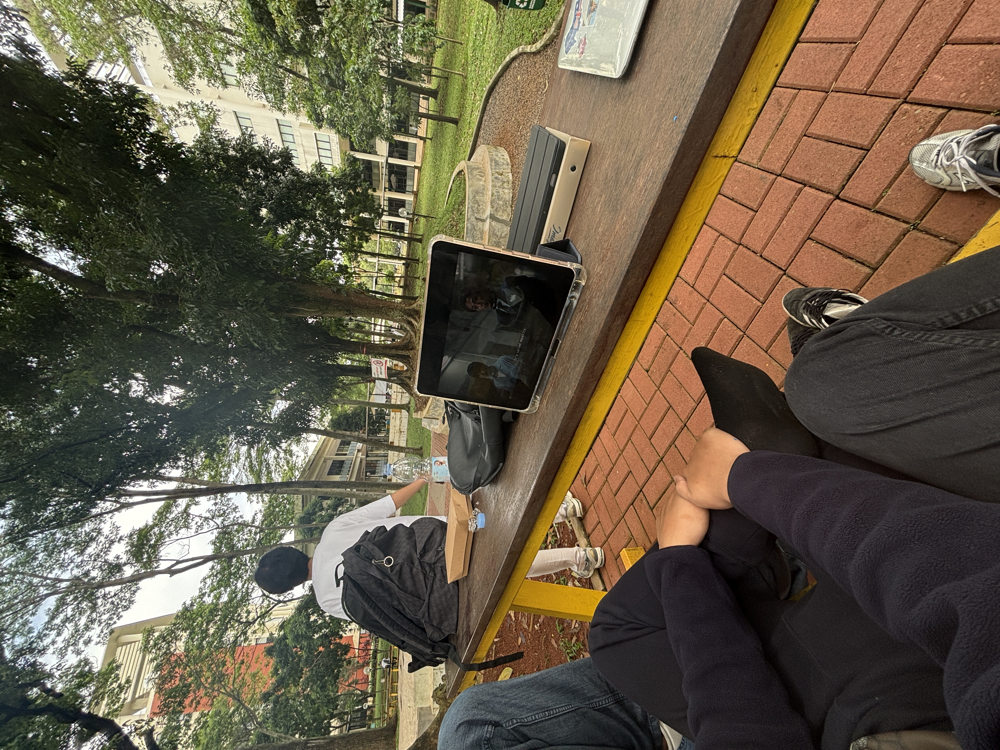
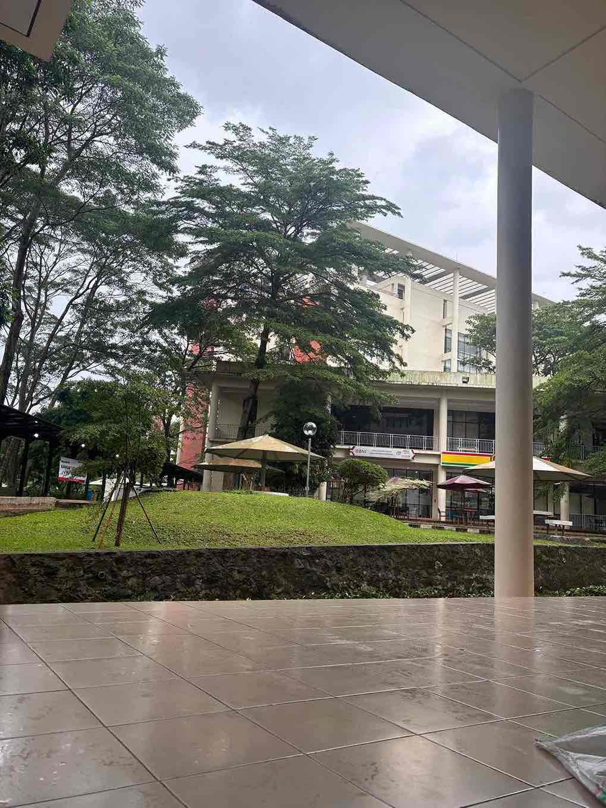
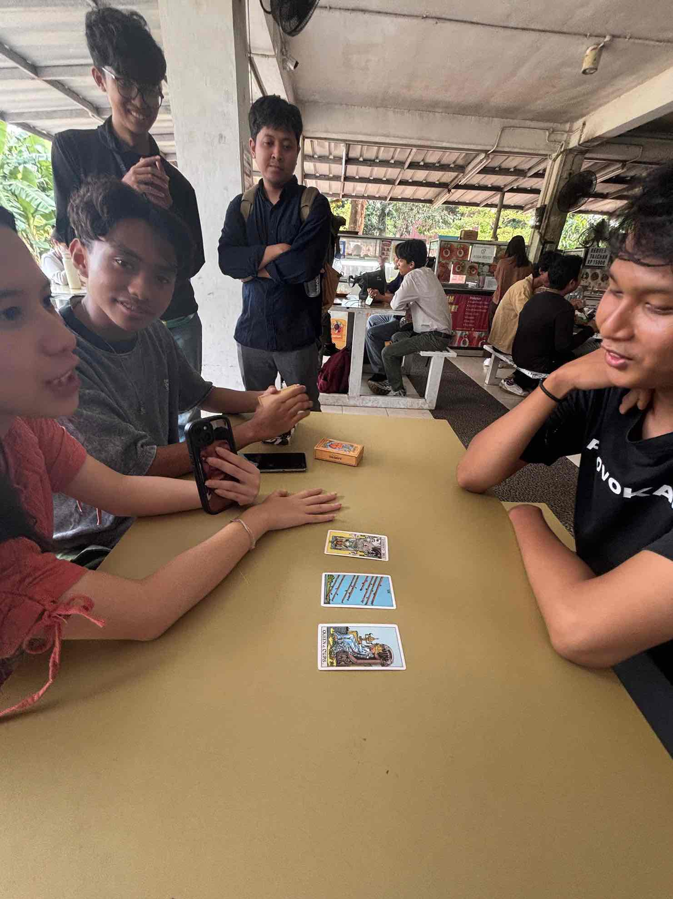
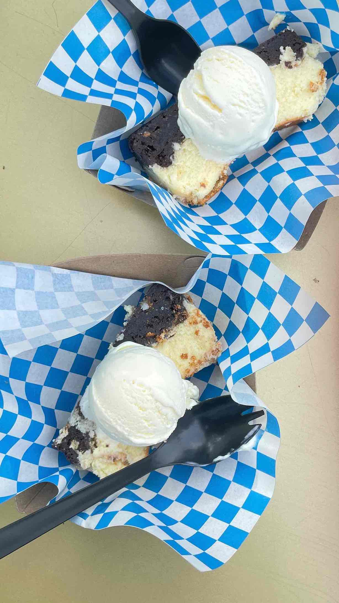

Lapangan Basket VOKASI merupakan tempat berkegiatan mahasiswa seperti Ombak,Olimvok,Mabimvok dan masih banyak lagi. Selanjutnya, Banyu Mili merupakan kolam yang terletak di dekat kantin vokasi, membuat suasana kantin menjadi nyaman dengan suara gemercik kolam yang menenangkan. Taman literasi menjadi pilihan utama bagi para mahasiswa untuk berkumpul, berdiskusi, makan, istirahat sejenak sambil menunggu kelas selanjutnya dan masih banyak lagi. Selasar VB menjadi spot yang sering digunakan untuk suatu event seperti offline activation pokemon pada bulan september 2025 lalu selain itu juga menjadi tempat berteduh jika hujan turun. Taman Vokasi tempat untuk berkegiatan bersama banyak teman karena tempatnya yang luas, tepat di depan gedung VC. Kantin Vokasi atau yang sering disebut KANVOK tempat yang paling sering di kunjungi mahasiswa tidak hanya mahasiswa vokasi tapi seluruh mahasiswa ui karena terdapat banyak makanan yang menarik perhatian. Lingkungan vokasi yang asri membuat banyak hewan mungil merasa nyaman seperti kucing kucing yang berkeliaran di vokasi. Terakhir makanan yang wajib kalian coba yaitu ice cream karambol merupakan tujuan banyak orang datang ke vokasi, selain ice cream terdapat bento yang menarik untuk kalian coba dan juga katsu yang harganya worth it fun fact kalian boleh banget nambah nasi dengan bilang banyakin nasi ke penjualnya lho, asal jangan lupa ketika selesai makan kalian harus mengembalikan piringnya kembali ke tempat penyimpanan piring kotor ya.